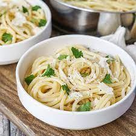

Garlic Butter Pasta

A simple dish made with only 4 ingredients
This may seem like a boring dish but don't judge a book by its cover. This pasta dish is bright, rich and creamy.
Ingredients
- Pasta - 3oz dry
- Salted Butter - 2 TBSPs
- Garlic - 2 Cloves
- Lemon - 1/2 Juiced
- Reserved Pasta Water - 1/4 Cup
Steps
- Fill up a medium sauce-pan with water.
- Heavily salt the water and bring to a boil.
- Prepare the dried pasta per the package instructions.
- Mince the two cloves of garlic and juice half the lemon. Set aside.
- In a non-stick skillet, melt the butter on low heat.
- Add the minced garlic to the melted butter.
- Once pasta is al dente. Reserve 1/4 cup of pasta water. Then drain pasta.
- Add pasta to the skillet and mix.
- Add 1 TBSP of pasta water to skillet. Mix well to create a silky sauce.
- Plate the pasta. Add a bit of lemon juice before serving. Enjoy!